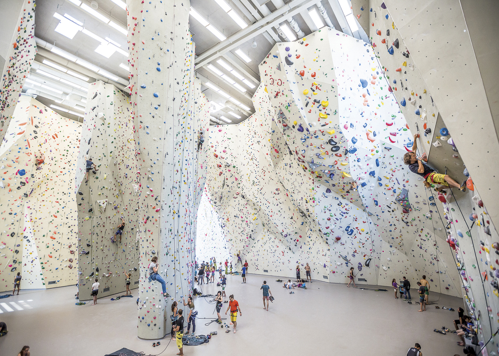
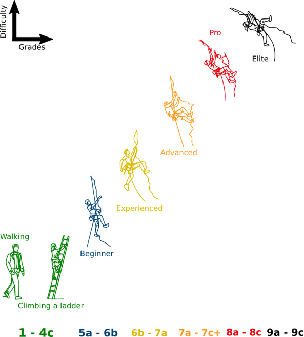
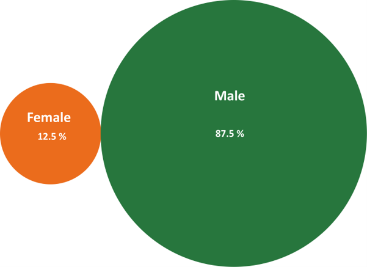
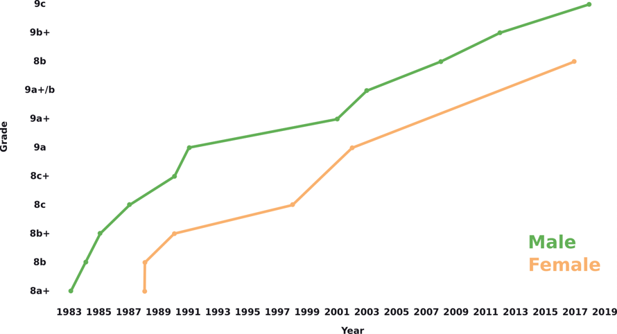
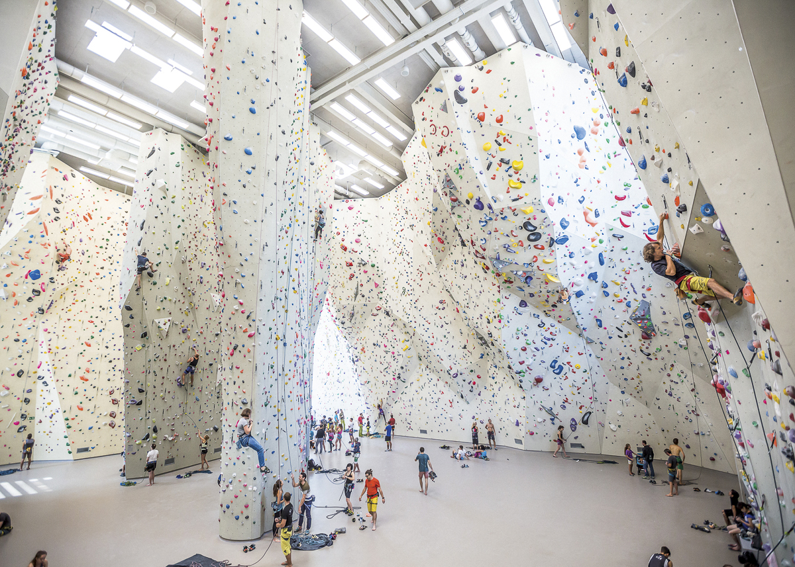
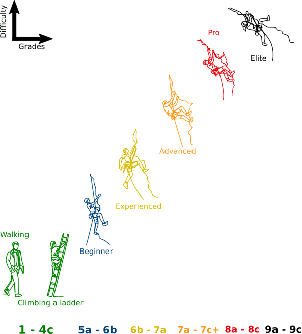
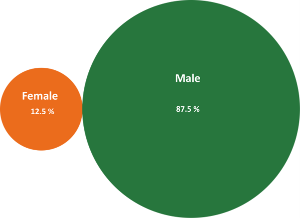
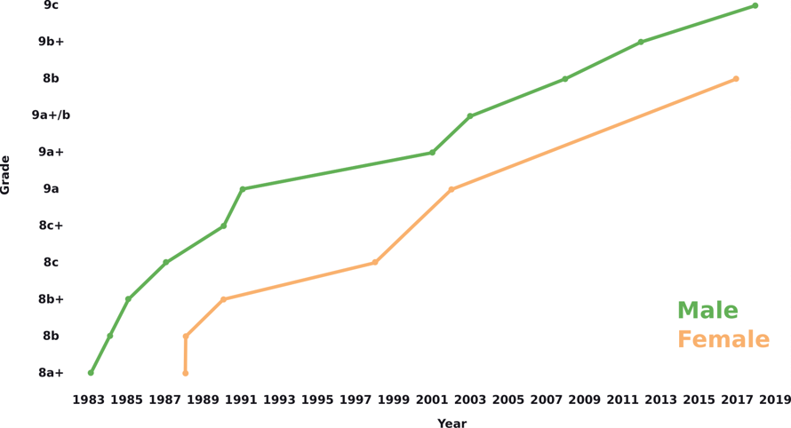

.jpg) 







Sport climbing involves high-intensity climbing on relatively short routes. Its distinguishing characteristics include preplaced bolts and an emphasis on the physical aspect of the climb rather than the destination or summit. A sport climb involves two persons: a climber and a belayer who secures the climber, in case of a fall, through a rope and a safety (belay) device.
Keeps the climber safe in case of a fall.
Secures the climber to the rope.
Maintain a connection between the rope and the pre-equipped bolts.
A friction brake that is able to stop the rope in case of a fall.
Increase adhesion on the rock.
For sweaty hands!
Training ground for alpinists in the outskirts of Paris where they were able to practice intricate, athletic movements by climbing without a rope on small cliffs.
Up until the 1970s, most free climbers felt it was cheating to hang on a rope to practice difficult moves over and over again, as one might do while bouldering. But during this influential decade in Yosemite Valley in California, free climbers began to experiment with what was known at the time as hang-dogging—that is, rehearsing a sequence of difficult moves over and over again while resting on the rope between attempts in an effort to master the climb. Hang-dogging and bolt-equipped climbs combined to create the discipline of sport climbing: climbing for the physical challenge of it on routes that have been engineered with in situ protection.
The first purpose-built indoor walls were introduced in the 1980s, and spread throughout Europe and North America by the mid-1990s.
Climbers use a highly technical system of grades, in the 1-10 range to keep track of the relative difficulty in sport climbing routes
Female climbers are significantly fewer than male!
Female climbers climb as well as male!